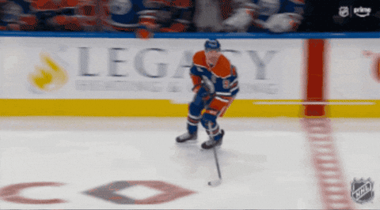

Potential NHL Rule Changes

NHL Hockey is an amazing sport to watch, but with a few rule changes it could be an even better sport to watch. Many of these rules are already in enforcement in various levels of minor hockey and the PWHL women's league. I believe that these rule changes will promote competition and fairness while making the game more fun to watch.
List of Proposed Rule Changes
- Regular season overtime is extended to 7 minutes before the shootout.
- Once the puck enters the offensive zone in regular season overtime, if it is carried by a player out of the offensive zone, it is a blown dead. (No Return Rule)
- If a short-handed goal is scored, the team with the powerplay will lose said powerplay. (Jailbreak Rule)
- 1-8 conference playoff seeding instead of divisional seeding
- 3-2-1-0 point system instead of 2-0-1.
Rule Change Explanations
- Currently, regular season overtime in the NHL is 5 minutes before a shootout occurs. I believe this is too short, so by extending overtime by two minutes it will create for more oppurtunites for teams to score and prevent games from ending in a boring shootout. If combined with rule change #2, it will be even better.
- This rule has already been implemented in the CHL (Champion's Hockey League) in Europe to positive effect. This rule is primarily to prevent teams from hogging possession of the puckby skating back into their zone. This rule will help to create more intensity in 3-on-3 overtime.*
- This rule has already been implemented in the PWHL (Professional Women's Hockey League) to great effect. This rule incentivizes the team on the penalty kill to push hard to get rid of their penalty while also creating more exciting hockey for fans.
- In the current NHL playoff seeding system, divisional seeding takes priority over conference seeding. This creates very lopsided matchups in the first round and also results in the fact that the same teams will face each other in the first round year after year. This rule change will give the matchups more parity and would also encourage inter-divisional rivalries.
- In the current point system, wins (regulation and OT) give two points, losses in regulation (not overtime/shootout) give zero points, and overtimes/shootout losses give one point. In the new point system, regulation wins give three points, OT/SO wins give two points, OT/SO losses give one point, and regulation losses give zero. This way, every type of game is worth the same amount of points and to teams pushing for a playoff spot, it would incentivize them to push harder for a win in regulation in order to secure that extra point, making for more exciting hockey to watch.
*For more reading about this rule, see this link: CHL introduces new "no return" rule